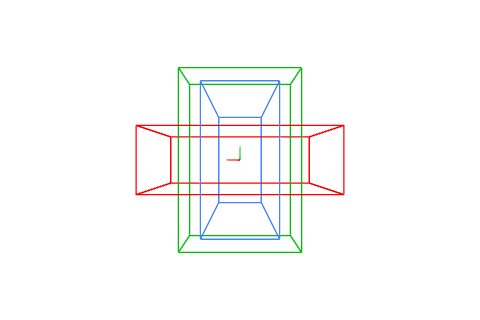
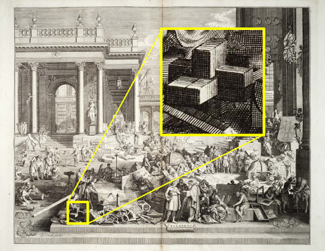
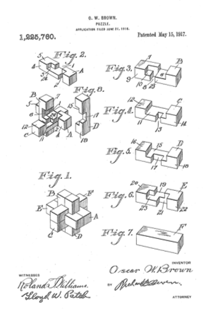

Welcome to the Burr Puzzle Solutions website! You can go right to the solutions list, or read about the rich history of these puzzles below.
The 6-piece burr puzzle (so called due to resembling a burr, as far as we are aware) has been known and studied for centuries. One of the earliest depictions is in Chambers's Cyclopaedia (1689), where it appears in the frontispiece. There are multiple patents that have been filed, and the puzzle itself is a favourite of carpenters and other craftspeople.


In China, they are known as Lu Ban Locks (鲁班锁) after the inventor Lu Ban. In Kerala, India, these wooden puzzles are called edakoodam (ഏടാകൂടം).
Each piece is a 2x2x6 grid of cubes, in which some cubes have been removed to allow the puzzle to fit together:
In his seminal studies on the topic, William Cutler determined there are 837 usable pieces. These pieces can be combined to create over 35 billion possible assemblies, but in practice fewer than 6 billion of them are actual puzzles, capable of being manufactured and assembled. Still, that is a lot of puzzles! Puzzles are rated for difficulty based upon how many voids there are in the inner cavity, with a level 1 puzzle having no voids, a level 2 having 1 void, and so on.